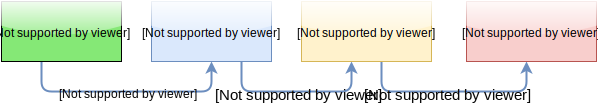
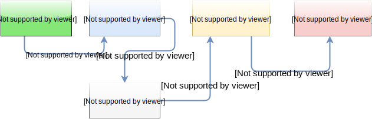
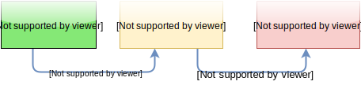
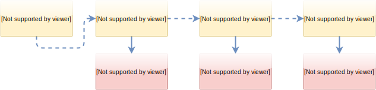

Micro-Services
Magento 2.0 Performance
by Ivan Chepurnyi
About Me
- One of lucky former members of Magento 1.x Core Team
- I love to optimize performance
- I give trainings and independent consultancy
Let's talk about PHP APP evolution
All started from the good old Apache's mod_php
mod_php
Drawbacks
- Dynamic server processes was not limited
- PHP process is alive unless all bytes transfered to a remote connection
- Every new PHP process takes time to start
Who is still running mod_php on production?
Then started an era of PHP-FPM
PHP-FPM
Drawback
Not controlling your memory usage, might results in memory over-usage by one of the processes
Now the era of async I/O PHP apps is emerging...
Application Process Manager
Drawbacks
- You have to control used memory
- You have to ensure async IO on any operation
- If single line of code fails, all app crashes
Is it possible with Magento 2?
The answer is micro-services...
What is a micro-service?
Micro-service is a component that runs as a separate application
Micro-service candidates in Magento 2.0
Sessions
- Every page load requires I/O operation to cache storage
- Dynamic requests in Varnish bootstrap full application
Session Application
Stock Processing
- Every order place request requires database lock on stock table
- You usually sacrifice stock integrity for performance reasons
Stock Application
Live proof of concept demo
Quote (Shopping Carts)
Every change shopping cart is a write DB operation
Quote Application
- Store quotes in memory
- Delayed DB syncronization
- Endless BI possibilities
Image resize
- Images has to be resized sequentially
- Cold image cache perfromance hit
Image Microservice
- Image can be resized in parallel
- Main Application can utilize Async I/O
Learn More
- ReactPHP: http://reactphp.org/
- PHPFastCGI: http://phpfastcgi.github.io/
- Sample counter server: http://bit.ly/counter-sample
Thank You
Q&A
@IvanChepurnyi
ivan@ecomdev.org